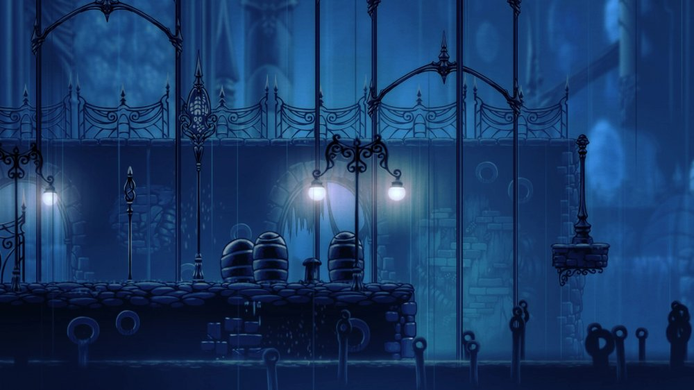

A ASCENSÃO DO REINO
O surgimento de Hallownest
Nas profundezas de um vasto mundo subterrâneo, diferentes tribos e criaturas viviam de acordo com suas próprias tradições. A chegada do Rei Pálido mudou o destino dessas terras. Sob seu governo, Hallownest se tornou uma civilização organizada, conectada por cidades, estradas, templos e antigas passagens.
A Cidade das Lágrimas tornou-se o centro do reino. Outras regiões, como os Ermos Fúngicos, o Pico de Cristal e a Bacia Antiga, passaram a fazer parte de uma extensa rede subterrânea.
